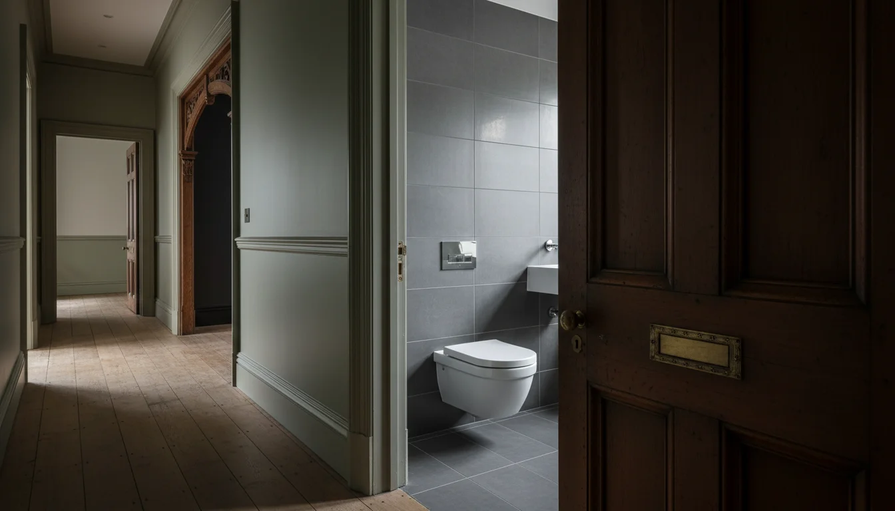
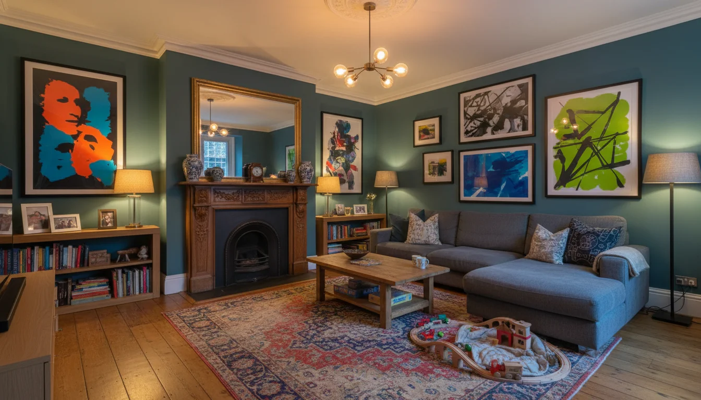

שילוב ישן וחדש בעיצוב פנים - האמנות הלונדונית שישראלים צריכים להכיר
קניתם דירה בלונדון. הבית ויקטוריאני, עם תקרות גבוהות, קרניזים מקוריים, אח ישנה בסלון ודלתות עץ שנראות כאילו הן פה כבר מאה שנה. האינסטינקט הישראלי אומר: לפרק, לסדר, להפוך הכול ללבן ומודרני. אני רוצה להסביר למה זו טעות - ולמה שילוב ישן וחדש בעיצוב פנים הוא בדיוק מה שהופך בית בלונדון למשהו שאי אפשר לשכפל.
למה לונדון עושה את זה הכי טוב
ללונדון יש משהו שלאף מקום אחר אין: מאות אלפי בתים ויקטוריאניים, ג׳ורג׳יאניים ואדוורדיאניים שעדיין עומדים, עדיין מתפקדים, ועדיין יפים. 150 שנה של אדריכלות שנשמרה.
בערים אחרות, ישן וחדש קיימים בנפרד. בפריז, הדירות נשארות קלאסיות מקיר לקיר. בתל אביב, אם הבניין לא נהרס - הוא שופץ עד שנראה חדש. לונדון הפכה את השילוב לאמנות. זה לא פשרה. זו גישה.
המעצבים הלונדוניים הכי טובים לא מנסים להחליט בין ישן לחדש. הם משלבים. הם מכניסים מטבח מודרני לחלוטין לתוך מעטפת ויקטוריאנית, שמים תאורה עכשווית ליד ceiling rose מהמאה ה-19, מתקינים חדר רחצה מינימליסטי מאחורי דלת פאנל מקורית. הניגוד הזה - הוא בדיוק מה שעושה את הקסם.
 מה זה period features ולמה זה משפיע על המחירperiod features הסבר - מה המאפיינים הויקטוריאניים שמעלים את מחיר הנכס בלונדון, למה אסור להוריד אותם, ואיך לעבוד איתם בשיפוץ בלי להרוס את הערך.
מה זה period features ולמה זה משפיע על המחירperiod features הסבר - מה המאפיינים הויקטוריאניים שמעלים את מחיר הנכס בלונדון, למה אסור להוריד אותם, ואיך לעבוד איתם בשיפוץ בלי להרוס את הערך.
מטבח מודרני בתוך מעטפת ויקטוריאנית
אם יש מקום אחד שבו שילוב ישן וחדש בעיצוב פנים נראה הכי דרמטי, זה המטבח.
בית ויקטוריאני טיפוסי לא תוכנן עם מטבח כמו שאנחנו מכירים. המטבח היה חדר שירות, למטה, נסתר. היום, הוא הלב של הבית - במיוחד למשפחות ישראליות שחיות במטבח. הפתרון הלונדוני הוא לפתוח את הקומה התחתונה, להכניס משטחים, מכשירים ותאורה מהמאה ה-21, ולהשאיר את המעטפת מספרת את הסיפור הישן. קרניזים מקוריים מעל אי מטבח מודרני. רצפת אריחים ויקטוריאנית לצד ארונות לבנים חלקים. חלון sash window מקורי שמביא את האור הלונדוני - אותו אור אפרפר-רך שלא קיים בישראל.
זה עובד כי הניגוד חד וברור. אתם לא מנסים להעמיד פנים שהבית חדש. אתם מצהירים: הבית ישן, המטבח חדש, וביחד זה יותר מעניין משניהם בנפרד.
יש כמה דרכים לעשות את זה:
- ארונות מטבח בסגנון shaker - קלאסיים אבל נקיים - עובדים מצוין בתוך מעטפת ויקטוריאנית
- ידיות מתכת מודרניות על דלתות פרופיל מסורתי
- משטח שיש או קוורץ מעל, תאורת LED נסתרת מתחת
- רצפה: אריחי מרצפת ויקטוריאניים מקוריים, או אריחים חדשים בסגנון גיאומטרי שמשדר אותו עידן בלי להעמיד פנים
זה עיצוב דירה בלונדון שמכבד את ההיסטוריה בלי להיות שבוי בה.
לבית שני שמשמש גם זוג לסוף שבוע וגם משפחה שלמה לשלושה שבועות באוגוסט - המטבח הוא הכרחי. הוא צריך לעבוד לארוחת שישי עם שמונה אנשים ולבוקר שקט עם קפה. המעטפת הישנה נותנת אופי. הפנים החדשות נותנות פונקציונליות.
חדרי רחצה - מאחורי דלתות מקוריות

אם המטבח הוא הניגוד הגלוי, חדר הרחצה הוא הניגוד הנסתר.
דלת פאנל מקורית, ידית פליז ישנה, ואתם פותחים ונכנסים לחדר רחצה שנראה כאילו הוא מלון בוטיק. ריצוף פורצלן גדול, כיור כפול על משטח אבן, מקלחון זכוכית חלקה. הכול מודרני, הכול נקי, הכול עובד. ואז אתם יוצאים ושוב אתם במסדרון ויקטוריאני עם תמונות במסגרות ישנות.
ההפתעה הזו - המעבר בין העולמות - היא חלק מהחוויה. זה לא שהבעלים לא יכלו לשפץ את המסדרון. הם בחרו להשאיר אותו ישן כי הם מבינים את האמנות של הניגוד.
מבחינה מעשית, חדרי רחצה מודרניים בתוך בתים ישנים הם הכרח. צנרת ויקטוריאנית לא מחזיקה מעמד. אריחים מקוריים לא עומדים בסטנדרטים של היום. אז אתם משפצים את חדר הרחצה ברמה הגבוהה ביותר, שומרים על הדלת המקורית, ויוצרים משהו שהוא גם מעשי וגם מרגש.
במשפחה עם ילדים, חדר הרחצה חייב לעבוד קשה. אמבטיה לילדים, מקלחת להורים, מקום לאחסון. כל זה נכנס בעיצוב מודרני. אבל כשהילד יוצא מהאמבט ופותח את הדלת המקורית למסדרון עם תקרה גבוהה ואור רך - הוא מרגיש שהוא בלונדון, לא בכל מקום אחר.
שילוב ישן וחדש בעיצוב פנים - הכלל הפשוט
שילוב ישן וחדש בעיצוב פנים בלונדון עובד לפי כלל פשוט: מה שמבני - חדש. מה שמעצב - ישן.
| מה לחדש | מה לשמר |
|---|---|
| מטבח ומכשירים | קרניזים ו-ceiling roses |
| חדרי רחצה וצנרת | אח מקורית |
| חימום תת-רצפתי | דלתות פאנל |
| מערכות חשמל | חלונות sash |
| תאורה מודרנית | מעקות מדרגות |
| רצפת עץ מקורית |
הכלל הזה עובד כי הוא מונע את שתי הטעויות הנפוצות. האחת: לשמור על הכול ישן ולגור בבית לא פונקציונלי. השנייה: להחליף הכול בחדש ולגור בדירת יוקרה שיכולה להיות בכל מקום בעולם. הבית הלונדוני הכי יפה הוא זה שאי אפשר לפרק ולהרכיב מחדש במקום אחר. הוא שייך למקום הזה.
יש מעצבים לונדוניים שמשתמשים בכלל ה-80/20 - 80% מהחלל מודרני ופונקציונלי, 20% שומר על אלמנטים מקוריים. מהניסיון שלי, היחס הנכון תלוי בבית. לפעמים זו ceiling rose אחת בסלון שמשנה את הכול. לפעמים זו רצפת אריחים ויקטוריאנית שלמה שמכתיבה את כל פלטת הצבעים.
בפרויקט שעבדתי עליו ב- East Finchley, מצאנו רצפת אריחים ויקטוריאנית מקורית מתחת לשטיח בכניסה. אפשר היה לפרק ולהחליף. במקום זה, שחזרנו את האריחים, בנינו mood board שלם סביב הצבעים שלהם, ועיצבנו את כל חלל המגורים בהתאם. התוצאה - שילוב של תאורה מודרנית עם עבודת תקרה ויקטוריאנית מקורית - יצרה כניסה שאי אפשר לשכפל בשום דירה חדשה.
מה לא לעשות בבית ויקטוריאני
הבריטים אוהבים לשמר. ישראלים אוהבים לחדש. שתי הגישות לגיטימיות - אבל כשישראלי קונה בית ישן בלונדון ומנסה להפוך אותו לדירה ישראלית חדשה, זה בדרך כלל לא מצליח.
הטעויות הנפוצות:
"בואו נוריד את הקרניזים" - קרניזים מקוריים שווים כסף. להוריד אותם זה לא רק לאבד אופי, זה לאבד שווי נכס. ואם הבניין רשום או באזור conservation area, אולי אסור לכם בכלל.
"למה צריך אח שלא עובדת?" - אח מקורית היא focal point גם כשהיא לא פועלת. מעצבים לונדוניים יודעים לעבוד עם אח דקורטיבית - מדף, מראה מעל, אובייקטים. להוריד אח מקורית ולהשאיר קיר חלק זו בדרך כלל טעות.
"אני רוצה open plan בכל מקום" - ישראלים ובריטים חושבים אחרת על חלל פתוח. בבית ויקטוריאני, החדרים הנפרדים הם חלק מהאופי. אפשר לפתוח חלק - בדרך כלל את הקומה התחתונה למטבח-סלון - אבל לפתוח הכול זה לאבד את מה שעושה את הבית הזה לבית ויקטוריאני.
"הכול לבן ומינימליסטי" - לבן עובד, מינימליזם עובד, אבל רק כרקע. period features צריכים קצת צבע, קצת טקסטורה, קצת עומק. קיר אחד עם טפט, ספה בד עשיר, שטיח פרסי - אלה הדברים שמשלימים את התמונה.
איך זה עובד למשפחה ישראלית

דירה שנייה בלונדון לא צריכה להיראות כמו הדירה בישראל. היא צריכה להיראות כמו לונדון - אבל לתפקד למשפחה.
שילוב ישן וחדש עוזר כאן דווקא. חדרים נפרדים בבית ויקטוריאני עובדים למשפחות: חדר לילדים, חדר להורים, סלון שקט, מטבח פעיל. לא צריך open plan כשכל חדר מרגיש שלם בפני עצמו.
תקרות גבוהות אומרות יותר אור טבעי ותחושת מרחב גם בחדרים קטנים יחסית. דלתות עץ כבדות אומרות שקט כשהילדים ישנים. אח מקורית בסלון אומרת ערב חורף בריטי שלא קיים בישראל.
בסלון, עיצוב בית בסגנון לונדוני אומר ספה מודרנית נוחה מול אח ויקטוריאנית. שטיח פרסי על רצפת עץ מקורית. תמונות בסגנון עכשווי בתוך מסגרות קלאסיות. הניגודים האלה יוצרים חלל שמרגיש חם, מעניין, ושונה מכל מה שיש לכם בישראל. וזה בדיוק הפואנטה - הבית השני צריך להרגיש אחרת. זה חלק מהסיבה שקניתם אותו.
ואם אתם מנהלים את השיפוץ מישראל, דעו שמעצבת שמכירה את שני העולמות - הישראלי והלונדוני - יודעת מה לשמור ומה לחדש בלי שתצטרכו להיות פה ולהחליט על כל פרט. תהליך השיפוץ בלונדון דורש תכנון מראש, ומה שכדאי לבדוק לפני שחותמים כולל גם את מצב ה-period features בנכס.
הבית הלונדוני הכי טוב לישראלי הוא לא בית שנראה ישראלי. הוא בית שנראה לונדוני - עם מטבח שעובד כמו ישראלי.
העין הזו - לדעת מה לשמר ומה לחדש - היא בדיוק מה שלימדו אותי עשרים שנה בלונדון.
- שילוב ישן וחדש בעיצוב פנים הוא מה שלונדון עושה הכי טוב - לא פשרה, אלא גישה עיצובית שמעלה ערך נכס
- הכלל הפשוט: מה שמבני (מטבח, חדרי רחצה, חשמל) - חדש. מה שמעצב (קרניזים, אח, דלתות פאנל, חלונות sash) - ישן
- מטבח מודרני בתוך מעטפת ויקטוריאנית הוא הניגוד הכי דרמטי - ולמשפחות ישראליות שחיות במטבח, הוא גם הכי חשוב
- הטעות הנפוצה של ישראלים: להוריד period features ולהפוך בית לונדוני לדירה שיכולה להיות בכל מקום. זה עולה באופי ובשווי
- הבית השני צריך להרגיש אחרת מהדירה בישראל - ושילוב ישן וחדש הוא בדיוק מה שיוצר את ה"אחרת" הזה